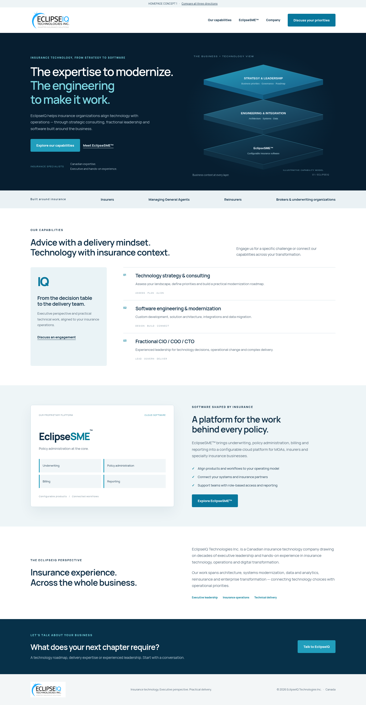

01 / Integrated IntelligenceTechnical depth.
Technical depth.
Enterprise presence.
Deep navy, precise typography and a layered capability model. A confident technology partner that connects executive strategy with engineering and software.
RECOMMENDED DIRECTION
View mobile screenshot